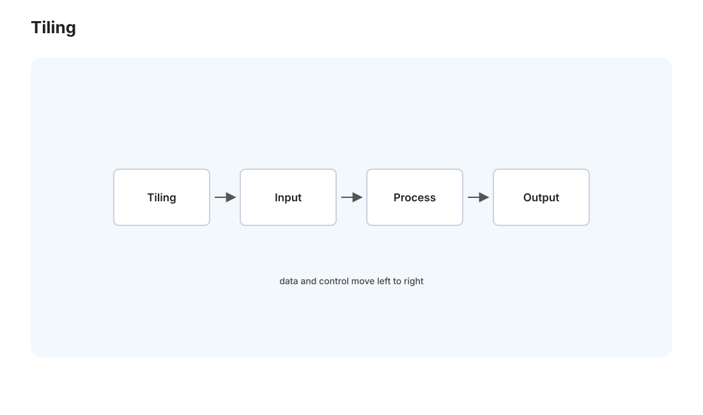
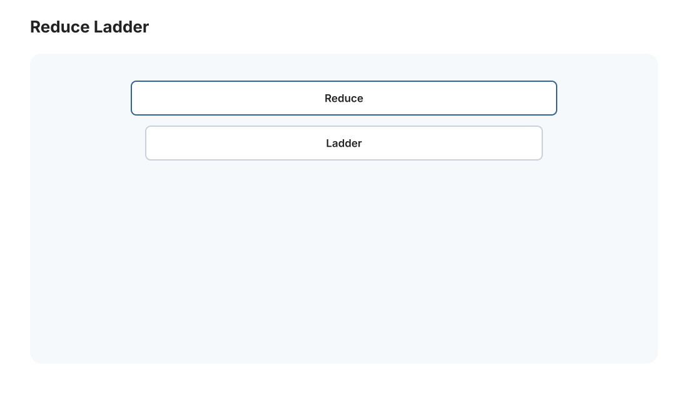
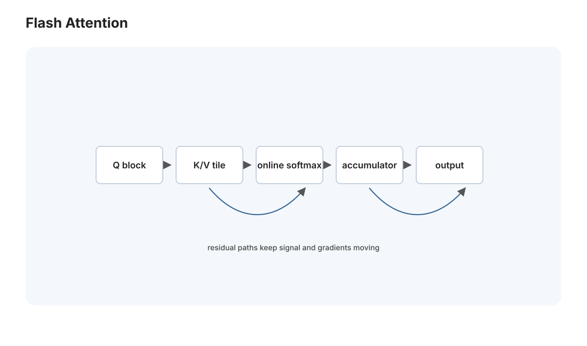

本页目录
GPU II · 核函数优化阶梯
对标：PMPP 优化章 / NVIDIA 性能指南 / FlashAttention 论文 ｜ 前置：gpu-01（CUDA 模型、内存层级）、perf 线（Roofline） gpu-01 让 kernel 能跑，这一页让它跑满硬件。GPU 优化是一条清晰的阶梯——从"占用率够不够"到"内存合并"到"用共享内存 tiling"到"warp 级原语"，每一级榨出更多性能。收官是一个玩具 attention kernel，让你摸到 FlashAttention 这类现代推理引擎（mlsys-02）核心内核的最小直觉。实验在 Win 4060 Ti 上跑。
学习层：为什么少写一次全局内存，往往比多买算力更有效？
具体谜题：16×16 tile 与在线 softmax
计算 \(C=AB\)，每个矩阵为 64×64。朴素 kernel 让每个输出元素反复从全局内存读 A 行和 B 列；16×16 tiling 后，一个 tile 内的数据可以被多少个线程复用？再对 logits \([2,1,0]\) 分块计算 softmax，先处理 \([2,1]\) 再加入 0，如何不保存完整 \(N\times N\) 矩阵仍得到同一归一化结果？
先预测访存与数值
预测：① 16×16 tile 中的每个 A/B 元素最多被 16 个线程复用，global load 相对朴素路径显著下降；② 在线 softmax 要在新最大值出现时重缩放旧和，否则结果不再归一；③ occupancy 不是越高越好，若寄存器不足导致 spill，理论 occupancy 上升也可能变慢。
最小心智模型：片上复用、warp 协作、稳定累积
GPU 优化的阶梯是把慢的全局访问变成合并访问，再把可复用数据放入 shared memory，最后用 warp shuffle 减少同步。attention 则把“算出全部分数并落盘”改成 tile 内流式累积；算法不变，内存交通改变。
形式机制与不变量
矩阵乘每个输出需 \(K\) 次乘加。无 tiling 时全局读取量近似为 \(2MNK\)；理想 \(T\times T\) tile 时，读入量近似为 \(2MNK/T\)，复用因子约为 \(T\)。在线 softmax 对已处理块维护 \(m=\max x_i\)、\(l=\sum_i e^{x_i-m}\)、\(o=\sum_i e^{x_i-m}v_i\)。加入新块最大值 \(m'\) 时：
\(l'=e^{m-m'}l+\sum_j e^{x_j-m'},\qquad o'=e^{m-m'}o+\sum_j e^{x_j-m'}v_j,\qquad y=o'/l'.\)
不变量是 \(y\) 与一次性 stable softmax 的结果相同，而中间 \(N\times N\) 分数不必写入 global memory。
反例与失效边界
- tile 过大可能耗尽 shared memory/寄存器并降低 occupancy；tile 过小则复用不足，必须以 Nsight 和真实 shape 校准。
- 在线 softmax 只解决数值稳定与中间存储，不会消除 \(QK^T\) 的算术工作，也不自动解决 causal mask、变长序列和 dropout。
- 共享内存 bank conflict、未合并加载、同步错误和边界 tile 会让“理论复用率”无法兑现。
迁移任务：把 L09 的 kernel 画成两张账
用同一组 \(Q,K,V\) 为 L09 记录 global read/write bytes、shared-memory tile size、寄存器压力和输出误差。先画朴素 attention 的 \(N\times N\) 中间矩阵，再画 FlashAttention 风格的 online state，说明 Roofline 位置如何因减少内存流量而移动。
无 JavaScript 时的静态读法：64×64 矩阵用 16×16 tile 时，理想情况下每个 A/B tile 元素被 16 个线程复用；全局读取近似从朴素的 \(2\times64^3=524{,}288\) 个元素级读取降到 \(2\times64^3/16=32{,}768\)。对 logits \([2,1,0]\)，先得 \(m=2,l=1+e^{-1}\)；加入 0 后 \(m'=2,l'=1+e^{-1}+e^{-2}\)，归一化不变。交互版可调 tile、寄存器预算、序列长度并观察 global traffic、occupancy 估计和在线 softmax trace。
| 路径 | 全局读取（元素级近似） | 中间矩阵 | 关键风险 |
|---|---|---|---|
| 朴素 matmul | 524,288 | 可能写回 | 重复慢访问 |
| 16×16 tiling | 32,768 | 不必落盘 | shared/register 预算 |
| online softmax | 随 tile 流式 | 只保留 \(m,l,o\) | 重缩放必须正确 |
1. 占用率：先让 GPU 忙起来
GPU 靠"线程多到掩盖延迟"工作（gpu-01）。占用率（occupancy） = 一个 SM 上实际活跃的 warp 数 / 硬件上限。占用率太低 → 没足够 warp 切换 → 内存延迟藏不住 → 性能差。
限制占用率的资源：每线程用的寄存器数、每 block 用的共享内存、block 大小。用太多寄存器/共享内存 → 一个 SM 装不下几个 block → 占用率降。优化第一步：调 block 大小 + 控制寄存器/共享内存用量，把占用率提上去（NVIDIA 有占用率计算器）。但注意——占用率不是越高越好：够掩盖延迟即可，过度追求会牺牲每线程资源。这是第一个要测量而非猜的旋钮（perf-01 的科学方法在 GPU 上同样适用）。
2. 内存优化：合并 + 共享内存 tiling

GPU 绝大多数 kernel 是内存受限的（Roofline 落在带宽屋顶下，perf-01），所以内存优化收益最大：
- 合并访问（gpu-01 铁律）：确保 warp 内相邻线程读写相邻全局地址。转置、跨步访问要特别小心——常需重排数据布局或用共享内存中转。
- 共享内存 tiling【核心手法】：以矩阵乘 \(C=AB\) 为例——朴素版每个线程从全局内存反复读 A 的行、B 的列（大量重复慢访问）。tiling 版：block 内线程协作把 A、B 的一个小块搬进共享内存（每个元素只从全局读一次），然后 block 内所有线程从快的共享内存反复复用这个块算局部积，算完换下一块。数据复用率从 O(1) 提到 O(块边长)——这正是 csapp-02/perf-02 分块思想的 GPU 化身，也是 GPU 矩阵乘/卷积/attention 的通用骨架。
- 避免共享内存 bank 冲突：共享内存分成 32 个 bank，同一 warp 若多线程访问同一 bank 的不同地址会串行化——用 padding 错开。这是共享内存优化的细节陷阱。
3. Warp 级原语：更细的协作

比共享内存更快的 block 内协作——warp 内 32 线程直接通过寄存器交换数据，不经共享内存：
- warp shuffle（
__shfl_*）：warp 内线程互读寄存器——归约（求和/求最大）在 warp 内可以不用共享内存、几条指令搞定（[L08] 的最高优化级）。 - warp 级归约 + block 级归约的两级模式：先 warp 内 shuffle 归约、每 warp 出一个部分和、再由一个 warp 归约这些部分和——这是 GPU 上求和/softmax 分母/范数的标准高效实现。
读法：GPU 归约优化的阶梯 naive（全局内存原子加，慢）→ 共享内存树形归约 → warp shuffle，是[L08]要亲手走一遍的经典进化，每一级都在减少慢内存访问、增加片上协作。
4. 玩具 Attention Kernel:摸到 FlashAttention 的直觉

现代大模型推理的核心算子是 attention：\(\text{softmax}(QK^T/\sqrt d)V\)。朴素实现要先算出完整的 \(QK^T\) 矩阵（\(N\times N\)）存回全局内存、再 softmax、再乘 V——这个 \(N\times N\) 中间矩阵是内存瓶颈（长序列时爆显存 + 大量慢访问）。
FlashAttention 的核心洞察（[实验 L09] 的目标）：不把 \(N\times N\) 中间矩阵写回全局内存——用 tiling 把 Q、K、V 分块搬进共享内存，在片上流式地算局部 attention 并用"在线 softmax"（增量更新最大值和归一化因子，数值稳定）累积结果。中间矩阵从不落全局内存 → 内存访问量从 \(O(N^2)\) 降到 \(O(N)\)，长序列大幅加速且省显存。
这缝合了本站三条线：GPU tiling（本页）+ 数值稳定的 softmax（🔗 数学站/ai 课的 log-sum-exp 技巧）+ Roofline"减少内存访问"（perf 线）。[L09] 做一个玩具版——不追求生产性能，但走通"分块 + 在线 softmax + 不落中间矩阵"的核心思路，你就摸到了 vLLM/FlashAttention 这类引擎（mlsys-02）最关键内核的骨架。
5. 优化闭环与工具
GPU 优化和 CPU 一样是测量驱动（perf-01）：
- Nsight Compute / Nsight Systems：GPU 的 profiler——看 kernel 的占用率、内存吞吐、warp 发散、bank 冲突、是内存受限还是算力受限。
- 闭环：profile → 判断瓶颈（占用率？合并？发散？）→ 应用对应阶梯手法 → 再 profile。别凭感觉优化 GPU，Nsight 会告诉你真正的瓶颈在哪。
6. 练习与要点
例 1（tiling 复用率） 矩阵乘用 \(32\times32\) 的 tile，每个全局元素被复用多少次？（约 32 次）——算一次，理解"tiling 把慢访问摊薄 32 倍"，GPU 矩阵乘为什么快一目了然。
例 2（归约三级对比） 在 [L08] 里对同一个求和跑 naive 原子加 / 共享内存树形 / warp shuffle 三版，测吞吐——亲手走完 GPU 归约优化阶梯，每级快多少心里有数。
例 3（在线 softmax 手推） 手推"增量加入一个新值时，如何更新已有的 max 和 sum 使 softmax 保持正确且数值稳定"——FlashAttention 的数学核心，[L09] 的灵魂。\(\blacksquare\)
▶ 实验 L09（玩具 attention kernel）：
labs/L09-attention/—— tiling + 在线 softmax + 不落中间矩阵，对照朴素版看显存和速度。跑在 Win 4060 Ti。做完你就懂了现代推理引擎最热的那个内核。
并行与性能线到此完成（8 页）。下一页转入 MLSys——把机器学习跑得快、跑得起的系统工程，正是你天天在用的大模型背后的支撑。